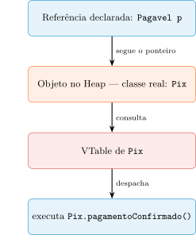
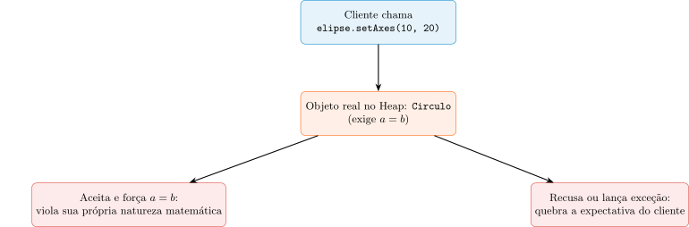
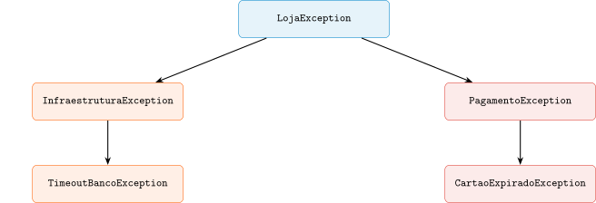

Aula 9 — Programação Orientada a Objetos
2026-09-16
Herança (Aula 8) deu reuso de estrutura — o filho incorpora o DNA do pai.
Mas DNA compartilhado não responde uma pergunta diferente: posso substituir o pai pelo filho com segurança?
Roteiro: binding e VTable → definição formal do LSP → as três regras de contrato → o paradoxo Círculo-Elipse → contratos de exceção → taxonomia do erro → Checked vs. Unchecked.
@OverrideLente do compilador: só vê o tipo declarado (Pagavel) — valida as mensagens.
Realidade do Heap: o objeto é de fato um Pix completo, com todo seu estado e comportamento.
Um sistema bem desenhado nunca precisa de instanceof para operar — essa transparência é o objetivo.
Early Binding (C/C++ estático): decisão do compilador, olhando o tipo da variável.
Late Binding (Java): a JVM olha a identidade real do objeto no Heap, no momento da chamada.
O objeto “diz”: “Eu sou um Pix, logo sei como confirmar meu pagamento.”

Mesma assinatura, semântica preservada — se o pai promete “validar”, o filho não vira “deletar”.
@Override não é decoração: é um guarda contra criar um método novo por erro de digitação.
Mas atenção: “mesma assinatura” não é o mesmo que “mesmo contrato” — é essa distância que o LSP formaliza a seguir.
Se o compilador só enxerga o tipo declarado (Pagavel), por que a chamada ainda “sabe” executar o código certo de Pix ou Boleto em tempo de execução?
Escreva sua resposta e compare com um colega antes de avançar (2 min).
@Override garante, por si só, que a semântica do método sobrescrito é preservada, independente do que o código do filho faça.Boleto e Pix implementam pagamentoConfirmado com a mesma assinatura, o método efetivamente executado depende só da identidade real do objeto, nunca do tipo da variável usada para chamá-lo.VTable e Late Binding — Resposta
@Override garante, por si só, que a semântica do método sobrescrito é preservada, independente do que o código do filho faça — @Override só garante a correspondência de assinatura contra erro de digitação; a preservação de semântica é responsabilidade do programador, não do compilador.Boleto e Pix implementam pagamentoConfirmado com a mesma assinatura, o método efetivamente executado depende só da identidade real do objeto, nunca do tipo da variável usada para chamá-lo — é a definição de Late Binding.Voltando à pergunta: a chamada “sabe” o código certo porque a decisão nunca foi do compilador — ele só valida a assinatura contra o tipo declarado. Quem decide, em cada chamada, é a JVM, consultando a VTable da classe real do objeto no Heap.
De “o código compila” para “o programa continua correto sob substituição”.
Definição: se \(S\) é subtipo de \(T\), objetos de \(T\) podem ser substituídos por objetos de \(S\) sem alterar as propriedades desejáveis do programa.
\[\forall x: T,\ \phi(x) \implies \forall y: S,\ \phi(y)\] \(\phi(x)\) = todas as propriedades observáveis (comportamento, tempo de resposta, estado final) esperadas de um \(T\).
Se um Pix retornar null, o programa quebra — não por erro de sintaxe, mas por comportamento observável surpreendente.
Conclusão central: comportamento que surpreende quem usa a base = hierarquia errada, mesmo que o código compile.
Pré-condições podem ser mantidas ou enfraquecidas, nunca fortalecidas — um cliente que já passava R$50,00 agora quebra sem aviso.
Pós-condições podem ser mantidas ou fortalecidas, nunca enfraquecidas — o filho pode entregar mais, nunca menos do que o prometido.
Se a base garante saldo >= 0, nenhum sacar() sobrescrito no filho pode deixar o saldo negativo.
O filho acessa a “cozinha” (protected) — mas não pode deixar o gás ligado ao sair.
As três regras são uma só ideia: o subtipo não pode surpreender quem confiava no comportamento do tipo base.
Mundo real: todo Círculo é uma Elipse. Todo Quadrado é um Retângulo.
Software mutável: Elipse.setAxes(a, b) altera os eixos independentemente; Circulo exige \(a = b\).
Forçar Circulo extends Elipse cria uma pergunta sem resposta honesta.
setAxes(10, 20)
Não há terceira opção honesta — qualquer saída viola o LSP.
Quadrado ser Retângulo (mundo real) \(\neq\) Quadrado ser subtipo válido de Retângulo (software).
Se o comportamento mutável de \(S\) não condiz com \(T\), \(S\) não é um subtipo de \(T\) — mesmo que a taxonomia do mundo real diga que sim.
Saída honesta: objetos imutáveis, ou abandonar a herança por uma interface comum mais genérica (FormaGeometrica).
Por que um Quadrado “ser” um Retângulo no mundo real não garante que ele seja um subtipo válido de Retângulo no código?
Escreva sua resposta e compare com um colega antes de avançar (2 min).
Retangulo tiver um método setAxes(a, b) que altera largura e altura de forma independente, forçar Quadrado extends Retangulo cria uma chamada sem resposta honesta.Retangulo e Quadrado forem tornados imutáveis, sem nenhum método que altere os eixos depois da criação.FormaGeometrica mais genérica, sem o método setAxes, resolveria o mesmo problema sem forçar uma relação de herança inválida.extends no código, sem risco de violar o LSP.Por que Quadrado “ser” Retângulo não garante subtipagem — Resposta
Retangulo tiver um método setAxes(a, b) que altera largura e altura de forma independente, forçar Quadrado extends Retangulo cria uma chamada sem resposta honesta — é exatamente o dilema do diagrama.Retangulo e Quadrado forem tornados imutáveis, sem nenhum método que altere os eixos depois da criação — sem mutação, não há chamada que force a escolha entre violar a natureza do objeto ou a expectativa do cliente.FormaGeometrica mais genérica, sem o método setAxes, resolveria o mesmo problema sem forçar uma relação de herança inválida — é a segunda saída honesta mencionada na aula.extends no código, sem risco de violar o LSP — é exatamente a falácia que o paradoxo desmonta: taxonomia do mundo real não garante subtipagem de software.Voltando à pergunta: o critério de subtipagem em software não é “X é um tipo de Y no mundo real”, é “o comportamento observável de X respeita todas as promessas de Y”. O paradoxo Círculo-Elipse mostra que essas duas perguntas podem ter respostas diferentes.
Nenhum código escrito contra Pagavel esperava essa exceção — ela não fazia parte do contrato original.
Lançar UnsupportedOperationException para “pular” um método do pai é quase sempre uma violação do LSP.
Ponte: se exceção é contrato, ela merece o mesmo cuidado de design que qualquer outro elemento da interface pública.
Erro não é “acidente”: é a saída prevista de uma função quando a pré-condição falha.
Pedido não pode ir a “Pago”? Ele transita para “Falha de Pagamento” — ambos estados válidos.
Custo real: lançar exceção monta um stack trace — caro. Reserve para o excepcional, não para fluxo comum.

Raiz de domínio + categorias (Infraestrutura vs. Negócio) + especialistas — não mensagens de texto soltas.
try {
servicoPagamento.processar(pedido);
} catch (CartaoExpiradoException e) {
view.pedirNovosDados(e.getDataExpiracao()); // ultra-especifica
} catch (PagamentoException e) {
view.notificarFalhaGenerica(e.getMensagemAmigavel()); // por categoria
} catch (LojaException e) {
log.registrarCritico(e); // ultima instancia
}O mesmo polimorfismo do Bloco 2, agora aplicado à reação a erro — o catch escolhe o nível de especificidade.
Cuidado simétrico: capturar Exception/Throwable indiscriminadamente esconde bugs que deveriam interromper a execução.
CheckoutController não deveria lidar com SQLException ou TimeoutException — é detalhe de implementação de outra camada.
O segundo argumento (e) preserva a causa original — o stack trace técnico não se perde, só fica escondido do chamador.
O controlador agora só entende Pagamento — não SQL, não REST, não socket.
O sistema de erro é parte da interface pública — deve ser tão previsível quanto qualquer método.
Se um método promete SaldoInsuficienteException, ele não pode deixar vazar um NullPointerException interno.
Unchecked (DNA): erro de lógica, contrato violado. Fail-Fast: valide cedo, lance na hora. Não se recupera bug com try/catch.
Checked (Mundo): falha externa previsível (rede, API, arquivo). O compilador obriga um Plano B — tratar ou reembalar.
public void realizarPagamento(double valor) {
checkarValor(valor); // 1. UNCHECKED: falha rapida
try {
gatewayPrincipal.conectar();
gatewayPrincipal.pagar(valor);
} catch (ConexaoException e) {
gatewayBackup.pagar(valor); // 2. TRATAR: contingencia
} catch (IOException e) {
throw new ErroDeNegocioException("Falha na rede bancaria", e); // 3. REEMBALAR
}
}Três perguntas diferentes: o chamador errou? / há rota de escape? / não há solução local?
Capturar um erro de DNA “para o sistema não cair” não resolve nada — só esconde o bug atrás de um comportamento incorreto.
Um método precisa lidar com um valor inválido do chamador e, separadamente, com uma falha de rede do banco. Por que essas duas situações não deveriam usar a mesma estratégia de tratamento?
Escreva sua resposta e compare com um colega antes de avançar (2 min).
try/catch que tenta “seguir em frente”.IllegalArgumentException só para evitar que o sistema pare, ele elimina o bug de origem, não apenas adia sua manifestação.IOException numa exceção de domínio, é uma boa prática preservar a exceção original como causa, em vez de descartá-la.Valor inválido vs. falha de rede — Resposta
try/catch que tenta “seguir em frente” — é a essência do design Unchecked.IllegalArgumentException só para evitar que o sistema pare, ele elimina o bug de origem, não apenas adia sua manifestação — na verdade, ele só esconde o bug atrás de um comportamento silenciosamente incorreto; a causa raiz continua lá.IOException numa exceção de domínio, é uma boa prática preservar a exceção original como causa, em vez de descartá-la — é o segundo argumento do construtor de FalhaComunicacaoException, essencial para manter o stack trace técnico rastreável.Voltando à pergunta: as duas situações têm responsáveis diferentes — o valor inválido é um bug de quem chamou o método (corrige-se o código, não se recupera em tempo de execução), enquanto a falha de rede é uma característica do ambiente que o método pode genuinamente contornar ou traduzir.
@Override preserva assinatura e semânticaPróxima aula: quando o negócio varia em dois ou mais eixos independentes ao mesmo tempo, a herança colapsa — a composição e o padrão Strategy resolvem.
UNICAMP — Instituto de Computação